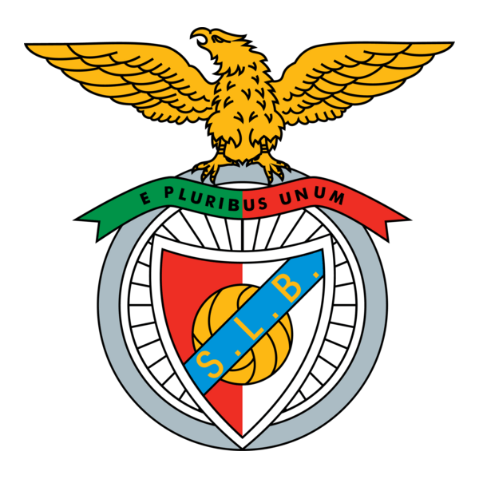

Lista títulos do Benfica
campeonatos - 39
taça de Portugal - 10
supertaça - 10
taça da liga - 8
liga dos campeões - 2
Melhores jogadores da história do Benfica
Eusébio
Mário Coluna
Fernando Chalana
Nené
José Águas

próxima página